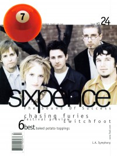

CMnexus
: Contemporary Christian culture, music, and media.
|
7ballMay / Jun 1999, #24
| Cover |
|---|
|  | | Writers in this Issue |
|---|
Brooks, Tammi
Dixon, Amy E.
Feinberg, Margaret
Gladhill, Thom
Jenison, David A.
Newcomb, Brian Quincy
Parker, Mike
Sondova, Amy
Steele, Mark
Strang, Cameron
Tudor, Steve
VanArendonk, Nancy
Walker, Derek
Well, Chris
|
Cover Feature:
- "Kiss and Tell" by Chris Well
Article:Media Watch:
- various artists - The T&N Files by Cameron Strang
- various artists - The Moment of Truth 2: Take A Stand by Cameron Strang
Bankshots:Album Review:blah, blah, blah by Mark Steele
Editorials, opinion, and commentary:
- "When You Can't Go" by Cameron Strang
This issue of 7ball came bundled with GAS #13. |
|
<>